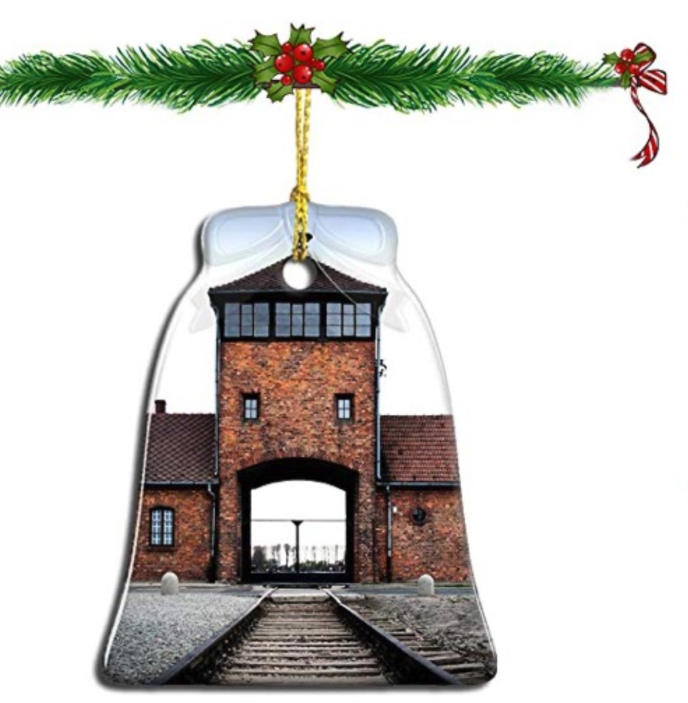

boycott.me
HOME
BOYCOTT
NEWS
HISTORY
STOCKS
FEEDBACK
SUPPORT US
SETTINGS
boycott.me
HOME
BOYCOTT
NEWS
HISTORY
STOCKS
FEEDBACK
SUPPORT US
SETTINGS
 Amazon has removed a number of Christmas ornaments featuring images of the Auschwitz concentration camps from sale, amid anger from the museum that manages the site. Pictures of the Nazi death camp complex were used on a variety of tree ornaments, a mouse pad and a bottle opener, which the Auschwitz Memorial described as "disturbing and disrespectful. Amazon removed the products, which were being offered by third-party sellers, when the Auschwitz Memorial tweeted about them. Read more
Amid pressures from the games industry, fans across the globe, and even the U.S. Congress and Senate, Blizzard President J. Allen Brack formally apologized and accepts all responsibility for the controversial banning of Hearthstone player Blitzchung. Read more
"It's really important that people can see for themselves what politicians are saying," Facebook CEO says. Facebook CEO Mark Zuckerberg defended his company's policy of not fact-checking political ads in part of an interview with "CBS This Morning" that was posted on Monday. "What I believe is that in a democracy, it's really important that people can see for themselves what politicians are saying so that they can make their own judgments," Zuckerberg said. "I don't think that a private company should be censoring politicians or news." Read more